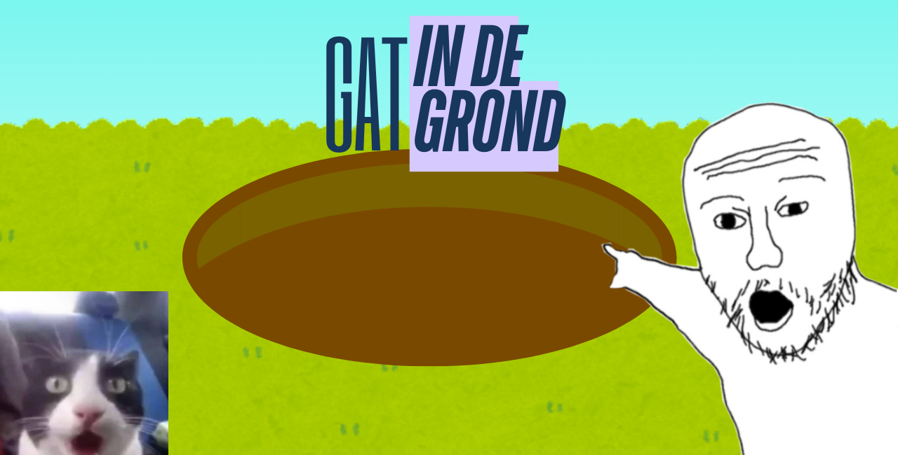
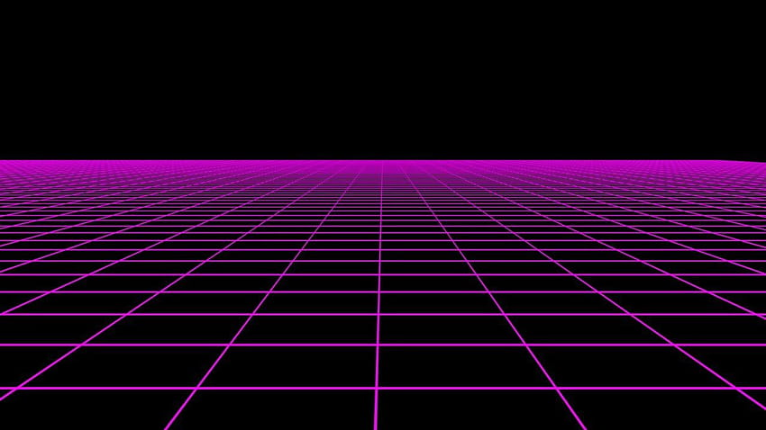

Gat In De Grond was an AR experience project created during my
game development studies.
This project focused on creating an interactive experience for
mobile devices while learning more about Unity and augmented
reality development.
It helped me explore a different side of game development outside
traditional PC games.
Genre: AR Experience
Platform: Mobile
Status: Finished
Engine: Unity